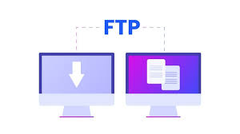

DEFINITION
File Transfer Protocol (FTP) is a standard network protocol used to transfer files from one computer to another over a TCP/IP network. It allows users to upload files to a server or download files from a server using an FTP client application.
How It Works
FTP uses two separate channels. The command channel on port 21 is used to send instructions and responses between the client and server. The data channel on port 20 is used for the actual transfer of file data. Users typically authenticate with a username and password before accessing files.
Because standard FTP does not encrypt data, more secure variants have been developed. SFTP (SSH File Transfer Protocol) and FTPS (FTP Secure) both encrypt the connection to protect usernames, passwords, and file contents during transfer.
Command Port
Port 21 is used for sending FTP commands and receiving server responses.
Data Port
Port 20 is used for the actual transfer of file data between client and server.
Secure Versions
SFTP and FTPS add encryption to protect data transferred over the network.
Common Clients
FileZilla, WinSCP, and Cyberduck are popular FTP client applications.